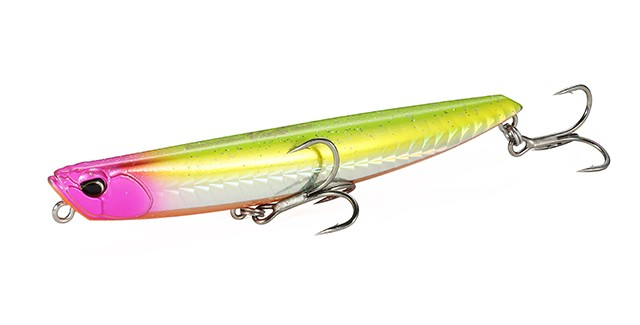
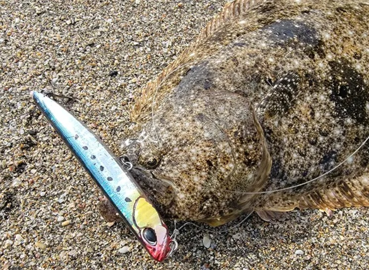
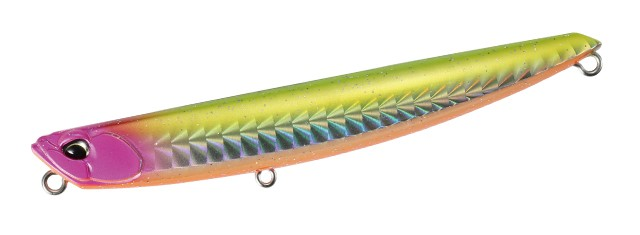
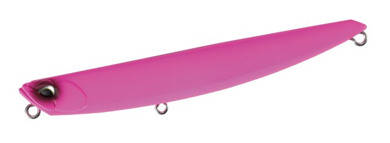
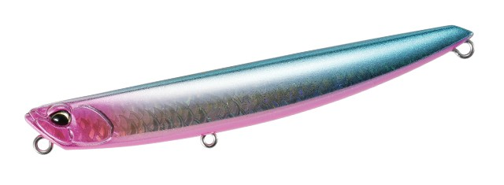
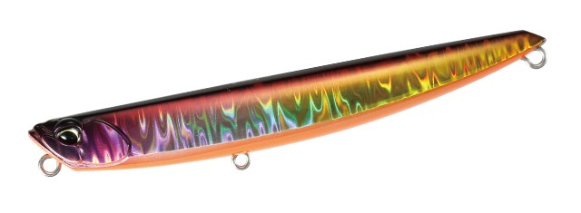

BeachWalker vista 100S
BeachWalker vista 100S(ビスタ100)はDUOから2026年発売のジグミノーです。
抜群の飛距離とレンジキープ性能サーフでの使用に特化しています。
サーフでヒラメが釣れる秘訣を解説。

画像出典:DUO公式HP
スペック
- メーカー
- DUO
- 長さ
- 100 mm
- 重さ
- 34 g
- フック
- #5×2
- リング
- #2.5
- レンジ
- オールレンジ
- タイプ
- ジグミノー
- 沈下タイプ
- シンキング
- アクション
- テールスイング
- ターゲット
- フラットフィッシュ
- 価格
- 2420円(税込)
- 発売日
- 2026-05-04
ビスタ100Sの特徴
サーフ釣行での使いやすさが凝縮したルアー！
-
抜群の飛距離と安定した飛行性能
固定重心、高比重センターバランス設計により、優れた飛距離を実現。
強風や波が強い状況下でも飛距離を落とさずにキャストできます。 -
優れたレンジキープ性能と水平姿勢
水平に近いスイム姿勢を維持し、フォールも水平フォールでナチュラルにアピール。
浮き上がりを抑える設計で、流れのあるサーフでも狙ったレンジを外さず、安定してトレースできる。 -
高い感知能力とアピール力
明確な巻き抵抗とボトムコンタクト性能を備えており、地形の変化や魚の当たりがわかりやすい。
アクションはテールスイングに近く、ボトム付近をナチュラルに誘いながらヒラメへ強くアピールします。
ビスタ100Sの使い方・得意な状況
基本的な使い方は、ストップ＆ゴーがオススメ。
サーフに特化しており、レンジキープ力が秀逸で、ボトム付近を攻めやすい。
浮き上がりにくい設計で、沖のブレイクから波打ち際までアピールしながらが引くことが可能です。
ビスタはほかのルアーではコントロールが難しい「荒天時」や「流れの速い状況」が得意なシチュエーションです。
ワンポイント
リール5～6回転につきストップで一回フォールを入れるのがベスト。
水平フォールでヒラメにアピールして釣果UPにつながります。

画像出典:instagram
人気カラー
ビスタ100は全13色のカラーラインナップ。サーフでオススメカラーを厳選して紹介します。

ピンクヘッドチャートOB状況問わず使えるビスタ100のメインカラー。とりあえずこれで間違いなし。

マットピンクサーフの人気カラー。ハイプレッシャー、マズメ時、濁り潮で効果的。

UVピンクシャイニーブルーGB安定のブルピン。グローとUVも採用した贅沢もりもりカラー

ゴールドハーフカタクチ玄人人気の隠れた名カラー。ゴールドはサーフで釣れます。
画像出典:DUO公式HP
人気のサーフルアー
- リンバーiF127s：詳細はこちら
- フリッパー
- ジョルティ